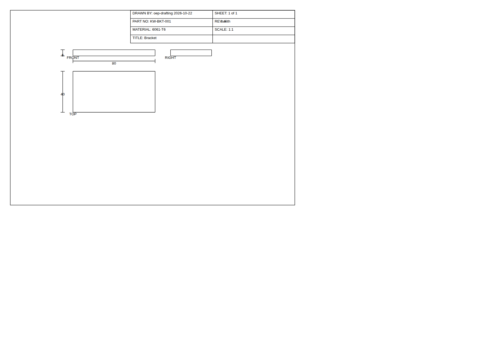
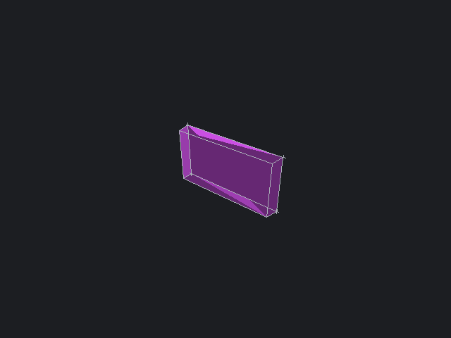
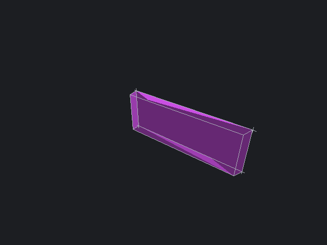

Welcome
Isolith is an open-source engineering design program. It does the everyday job of professional CAD: you create and edit 3D parts, put them into assemblies, and turn them into drawings, without the subscriptions, per-seat fees, or forced cloud accounts that ship with commercial CAD.
Your software and your data stay on machines you control. Isolith runs entirely inside your own network and works fully air-gapped, which is why defense teams and suppliers that handle ITAR data can consider it at all.
It opens the files engineers actually exchange: STEP, CATIA CGR and 3DXML, and it can pull geometry out of native CATPart files. When a supplier sends a part, you open it, inspect it, and build on it.
Every image and video on this page is a real capture from the running
software on main commit e2a8ef9, with its provenance listed in
the media manifest. This is a young
editor surface; the captures show exactly what it produces.

oep-drafting: a 1:1 sheet with a
title block (part, material, scale) and top/front/right projected views
with dimensions. Vector-crisp SVG golden rendered to PNG (1800x1272).


Install it on machines you own. One workstation is enough to design; a full setup adds a small server for the data vault and optional worker nodes for heavier jobs. Releases ship as signed binaries, and every release is rehearsed by installing on clean machines and verifying before it is offered. No account, no activation, no phone-home. It runs offline. The getting-started guide is the verified eight-step install checklist; the admin guide covers the online and air-gap paths in full.
What the stack gives you and the eight-step checklist to a verified install on one machine.
Read the guideOnline and air-gap install paths, TLS, backup, disaster recovery, and the update posture.
Read the guideWhat each reader opens, and at what fidelity. Every claim ties to a published measurement; nothing is overstated.
Read the matrixThe delivered stack is one container image with four services on one host (docs included, so there is no separate documentation infrastructure):
| Service | What it is | Host address (default) | Health surface |
|---|---|---|---|
pdm | Self-hosted PDM: vault, revisions, RBAC, audit, REST API v1 | 127.0.0.1:8787 | GET /api/v1/health |
viewer | Browser UI: item explorer, BOM tree, preview embed, compare | 127.0.0.1:8790 | GET / (HTTP 200) |
p2p | P2P compute lane: queue depth, node health, job logs, cost | 127.0.0.1:8080 | GET /healthz |
docs | This documentation site | 127.0.0.1:8792 | GET /healthz |
Default host binds are 127.0.0.1. Nothing is exposed to the LAN
until an operator publishes a port, and no component phones home.
Hostnames such as docs.openengineeringplatform.example are wired
to whichever of these the operator decides to expose, on their own network.
Isolith is positioned on what it is, not on who it replaces: engineering data stays on your network, under your control; the software is open and self-hostable; and an air-gap path is a first-class install option. Readers are clean-room implementations of public file formats where the file format is public, and lawful observation of proprietary formats where it is not. The format matrix is written to match the measured capability of those readers, including what they cannot do yet. The product name is Isolith; "OEP" (Open Engineering Platform) remains the working name of the delivery stack and this documentation site.